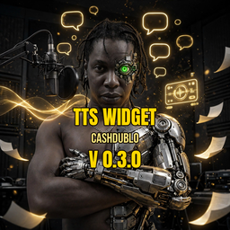

← All apps

TTS Widget
SOURCE: ANDROID 0.3.0Type or paste text and your phone reads it out loud.
What it does
- A 1x1 widget for your home screen - one tap and the app opens
- Paste from the clipboard or type your own text
- Speak, stop and clear buttons
- Speed slider (half speed to double speed) and a pitch slider
- Save texts you use again and again - play them back or load them with a tap
- If the text language and the speech language differ, the text is translated first, shown to you, then read aloud
- Uses the voice built into your phone - fast, works offline, no key needed
- Six themes in the Theme Manager, including its own Broadcast Gold
- Speaks 14 languages, picked in Settings
- Works offline — speech and your saved texts keep working; translation waits for the internet and your saved work is not lost
- A developer panel in Settings, opened by tapping the install code
Why have it
hear any text read out loud in two taps, with no account and no internet.
Version 0.3.0 · Android